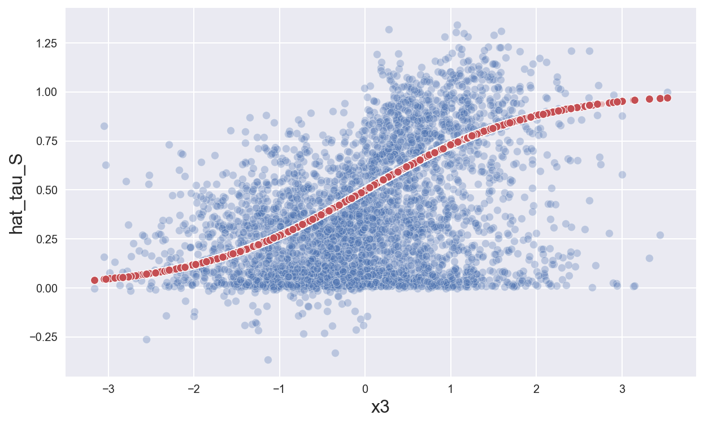
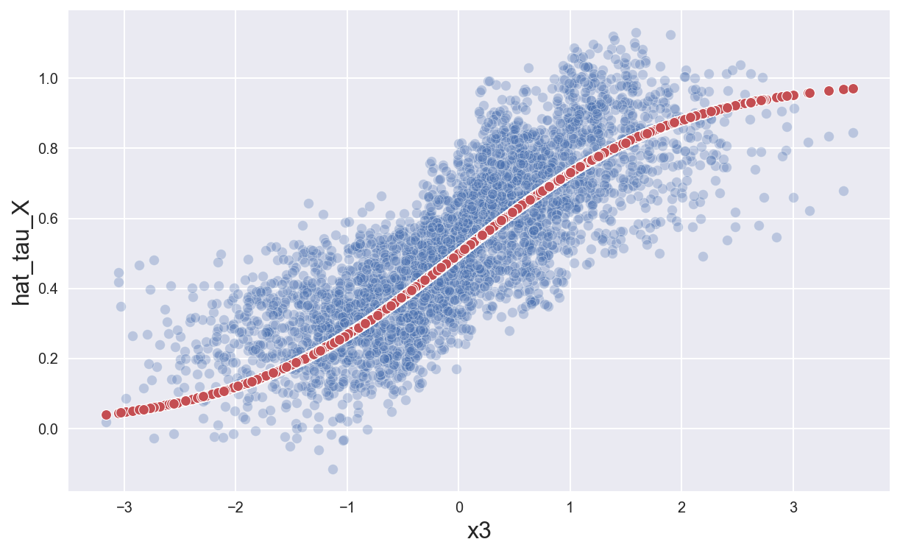

Meta Learners

In this tutorial, we are going to explore and compare different methods that leverage machine learning to estimate heterogeneous treatment effects.
For this tutorial, I assume you are familiar with the following concepts:
- Rubin’s potential outcome framework
- Propensity score weighting
- Basic machine learning models
Setting
We assume that for a set of i.i.d. subjects $i = 1, …, n$ we observed a tuple $(X_i, D_i, Y_i)$ comprised of
- a feature vector $X_i \in \mathbb R^n$
- a treatment assignment $T_i \in \lbrace 0, 1 \rbrace$
- a response $Y_i \in \mathbb R$
Assumption 1 : unconfoundedness (or ignorability, or selection on observables)
$$ \big \lbrace Y_i^{(1)} , Y_i^{(0)} \big \rbrace \ \perp \ T_i \ | \ X_i $$
i.e. conditional on observable characteristics $X$, the treatment assignment $T$ is as good as random.
Assumption 2: overlap (or bounded support)
$$ \exists \eta > 0 \ : \ \eta \leq \mathbb E \left[ T_i = 1 \ \big | \ X_i = x \right] \leq 1-\eta $$
i.e. no observation is deterministically assigned to the treatment or control group.
Meta Learners
S-Learner
The simplest meta-algorithm is the single learner or S-learner. To build the S-learner estimator, we fit a single model for all observations.
$$ \mu(z) = \mathbb E \left[ Y_i \ \big | \ (X_i, T_i) = z \right] $$
the estimator is given by the difference between the predicted values evaluated at $t=1$ and $t=0$.
$$ \hat \tau_{S} (x) = \hat \mu(x,1) - \hat \mu(x,0) $$
Problems
- We are learning a single model so we hope that the model uncovers heterogeneity in $T$ but it might not be the case
- If the model is heavily regularized because of the high dimensionality of $X$, it might not recover any treatment effect
- e.g. with trees, it might not split on $T$
T-learner
To build the two-learner or T-learner estimator, we fit two different models, one for treated units and one for control units.
$$ \mu^{(1)}(x) = \mathbb E \left[ Y_i \ \big | \ X_i = x, T_i = 1 \right] \qquad ; \qquad \mu^{(0)}(x) = \mathbb E \left[ Y_i \ \big | \ X_i = x, T_i = 0 \right] $$
the estimator is given by the difference between the predicted values of the two algorithms.
$$ \hat \tau_{T} (x) = \hat \mu^{(1)}(x) - \hat \mu^{(0)}(x) $$
Problems
- We are using just a fraction of the data for each prediction problem
- S-learner was using all the data
- We might get heterogeneity where there is none, just because we are forcing different models
- E.g. if trees split differently, to compute the two potential outcomes we use different populations
X-learner
The cross-learner or X-learner estimator is an extension of the T-learner estimator. It is built in the following way:
-
As for the T-learner, compute separate models for $\mu^{(1)}(x)$ and $\mu^{(0)}(x)$ using the treated and control units, respectively
-
Compute the estimated treatment effects as
$$ \Delta_i (x) = \begin{cases} Y_i - \hat \mu^{(0)}(x) &\quad \text{ if } T_i = 1 \newline \hat \mu^{(1)}(x) - Y_i &\quad \text{ if } T_i = 0 \end{cases} $$
-
Predicting $\Delta$ from $X$, compute $\hat \tau^{(0)}(x)$ from treated units and $\hat \tau^{(1)}(x)$ from control units
-
Estimate $e(x) = \mathbb E \left[ T_i = 1 \ \big | \ X_i = x \right]$
-
Compute
$$ \hat \tau_X(x) = \hat \tau^{(0)}(x) \hat e(x) + \hat \tau^{(1)}(x) (1 - \hat e(x)) $$
Example
In this example, we are going to use the following data generating process
- $N = 4000$
- $p = 10$
- $X_i \sim N(0, I_p)$
- $e(x) = 0.3$
- $\varepsilon_i \sim N(0, 1)$
- $\mu^{(0)}(x) = (x_1 + x_2)_{+} + \varepsilon$
- $\mu^{(1)}(x) = (x_1 + x_2)_{+} + \frac{1}{1 + e^{-x_3}} + \varepsilon$
So that the propensity score is constant $e(x) = 0.3$, the treatment effect is $\frac{1}{1 + e^{-x_3}}$ and the average treatment effect is $0.5$.
%matplotlib inline
%config InlineBackend.figure_format = 'retina'
from src.utils import *
from src.dgp import dgp4
We generate a dataset out of our DGP.
dgp = dgp4()
df = dgp.generate_data()
df.head()
| x1 | x2 | x3 | x4 | x5 | x6 | x7 | x8 | x9 | x10 | e | T | tau | Y | |
|---|---|---|---|---|---|---|---|---|---|---|---|---|---|---|
| 0 | 1.624345 | -0.611756 | -0.528172 | -1.072969 | 0.865408 | -2.301539 | 1.744812 | -0.761207 | 0.319039 | -0.249370 | 0.3 | 0 | 0.370943 | 1.116502 |
| 1 | 1.462108 | -2.060141 | -0.322417 | -0.384054 | 1.133769 | -1.099891 | -0.172428 | -0.877858 | 0.042214 | 0.582815 | 0.3 | 0 | 0.420087 | -0.248671 |
| 2 | -1.100619 | 1.144724 | 0.901591 | 0.502494 | 0.900856 | -0.683728 | -0.122890 | -0.935769 | -0.267888 | 0.530355 | 0.3 | 0 | 0.711276 | 0.651441 |
| 3 | -0.691661 | -0.396754 | -0.687173 | -0.845206 | -0.671246 | -0.012665 | -1.117310 | 0.234416 | 1.659802 | 0.742044 | 0.3 | 0 | 0.334662 | -0.913644 |
| 4 | -0.191836 | -0.887629 | -0.747158 | 1.692455 | 0.050808 | -0.636996 | 0.190915 | 2.100255 | 0.120159 | 0.617203 | 0.3 | 0 | 0.321441 | 0.121779 |
First, we implement the simplest machine learning method for learning heterogeneous treatment effects: the S-learner.
We fit a single RandomForestRegressor method to all the data.
from sklearn.ensemble import RandomForestRegressor as rfr
mu_S = rfr(min_samples_leaf=30)
mu_S.fit(df[dgp.X + ['T']], df['Y']);
Then, we use it to predict $\mu^{(1)}(x)$ and $\mu^{(0)}(x)$.
df['hat_mu0_S'] = mu_S.predict(df[dgp.X + ['T']].assign(T=0))
df['hat_mu1_S'] = mu_S.predict(df[dgp.X + ['T']].assign(T=1))
We estimate the average treatment effect as the difference between the two predictions.
df['hat_tau_S'] = df['hat_mu1_S'] - df['hat_mu0_S']
print(f"S-learner estimate : {np.mean(df['hat_tau_S']):.4}")
S-learner estimate : 0.3657
How close are we to the true treatment effect?
sns.scatterplot(data=df, x='x3', y='hat_tau_S', alpha=0.3);
sns.scatterplot(data=df, x='x3', y='tau', color='C2');

The T-learner method instead fits different model for treated and control units. The advantage is that it can
mu0_T = rfr(min_samples_leaf=30)
mu0_T.fit(df.loc[df['T']==0, dgp.X + ['T']], df.loc[df['T']==0, 'Y'])
mu1_T = rfr(min_samples_leaf=30)
mu1_T.fit(df.loc[df['T']==1, dgp.X + ['T']], df.loc[df['T']==1, 'Y']);
Then, we use it to predict $\mu^{(1)}(x)$ and $\mu^{(0)}(x)$.
df['hat_mu0_T'] = mu0_T.predict(df[dgp.X + ['T']])
df['hat_mu1_T'] = mu1_T.predict(df[dgp.X + ['T']])
We estimate the average treatment effect as the difference between the two predictions.
df['hat_tau_T'] = df['hat_mu1_T'] - df['hat_mu0_T']
print(f"S-learner estimate : {np.mean(df['hat_tau_T']):.4}")
S-learner estimate : 0.5231
We can plot the distribution of treatment effect estimates against the true values.
sns.scatterplot(data=df, x='x3', y='hat_tau_T', alpha=0.3);
sns.scatterplot(data=df, x='x3', y='tau', color='C2');

Let’s now estimate the X-learner. The first step is exactly the same as for the T-learner: estimate $\hat \mu^{(1)}(x)$ and $\hat \mu^{(0)}(x)$ using the treated and control group, respectively.
Afterwards, we compute the estimated treatment effect on the treated using the the estimated counterfactual outcome estimated on the control group $\hat \mu^{(0)}(x)$, and viceversa.
df['Delta'] = 0
df.loc[df['T']==0, 'Delta'] = (df['hat_mu1_T'] - df['Y'])[df['T']==0]
df.loc[df['T']==1, 'Delta'] = (df['Y'] - df['hat_mu0_T'])[df['T']==1]
Then, we basically repeat the process for the T-learner, but using Delta as outcome variable.
tau0_X = rfr(min_samples_leaf=30)
tau0_X.fit(df.loc[df['T']==0, dgp.X + ['T']], df.loc[df['T']==0, 'Delta'])
tau1_X = rfr(min_samples_leaf=30)
tau1_X.fit(df.loc[df['T']==1, dgp.X + ['T']], df.loc[df['T']==1, 'Delta']);
df['hat_tau0_X'] = tau0_X.predict(df[dgp.X + ['T']])
df['hat_tau1_X'] = tau1_X.predict(df[dgp.X + ['T']])
Finally, we estimate the propensity score.
from sklearn.linear_model import LogisticRegression as lr
df['hat_e'] = lr().fit(df[dgp.X], df['T']).predict_proba(df[dgp.X])[:,1]
Now we can compute the X-learner estimate as
df['hat_tau_X'] = df['hat_e'] * df['hat_tau0_X'] + (1-df['hat_e']) * df['hat_tau1_X']
print(f"X-learner estimate : {np.mean(df['hat_tau_X']):.4}")
X-learner estimate : 0.5253
We can plot the distribution of treatment effect estimates against the true values.
X_plot = sns.scatterplot(data=df, x='x3', y='hat_tau_X', alpha=0.3);
sns.scatterplot(data=df, x='x3', y='tau', color='C2');

The X-learner estimator is heavily superior to both the S-learner and the T-learner. This is particularly evident if we combine all the plots.
fig, axs = plt.subplots(1,3, sharex=True, sharey=True, figsize=(20,6))
for i, l in enumerate(['S', 'T', 'X']):
sns.scatterplot(data=df, x='x3', y=f"hat_tau_{l}", alpha=0.3, ax=axs[i]);
sns.scatterplot(data=df, x='x3', y='tau', color='C2', ax=axs[i]).\
set(title=f"{l}-learner", ylabel='');
References
- Meta learners: Metalearners for estimating heterogeneous treatment effects using machine learning (2019) by Künzel, Sekhon, Bickel, and Yu
- Taxonomy of methods: Recursive partitioning for heterogeneous causal effects (2016) by Athey and Imbens
- Video lecture by Stefan Wager (Stanford)